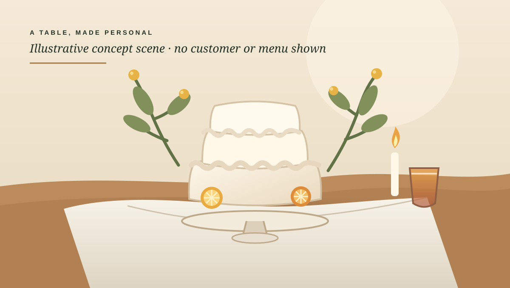

A centerpiece for a moment.
A visual direction for custom baking inquiries, with room to describe the occasion and shape the conversation.
DIRECTION STUDYA CONCEPT FOR BAKING · CATERING · PRIVATE CHEFS
A warm, thoughtful first look at the details behind a gathering.
Explore the owner view
THE OCCASION TABLE · CONCEPT STUDYThis concept shows one possible way to organize a first conversation: the occasion, the date, the gathering size and what kind of help is being explored.
A visual direction for custom baking inquiries, with room to describe the occasion and shape the conversation.
DIRECTION STUDYA second direction for a hosted gathering, framed around guest count, place and what needs discussing.
DIRECTION STUDYTHE PHONE OWNER VIEW
A practice workspace for seeing how a small owner desk might feel on a phone.
What would help next
Ask which direction they have in mind, confirm the date and place they want to discuss, and invite any other useful context. Keep any service, menu, date and availability questions open for direct discussion.
Make room for the moment.
Confirm the occasion, preferred date, location and approximate guest count before agreeing on a next step.